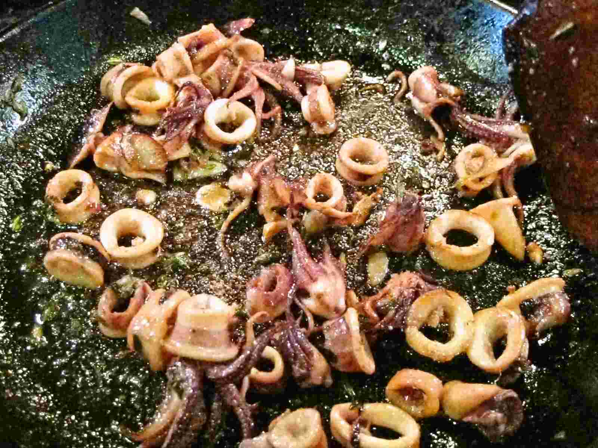

Step 4: Whisk cornmeal, flour, salt, and pepper in medium bowl to blend. Toss calamari rings and tentacles in flour mixture, shaking off excess. Working in batches, fry calamari in oil until brown and crisp, about 3 minutes. Using slotted spoon, transfer calamari to paper towels to drain. Sprinkle with salt. Transfer to large bowl.
